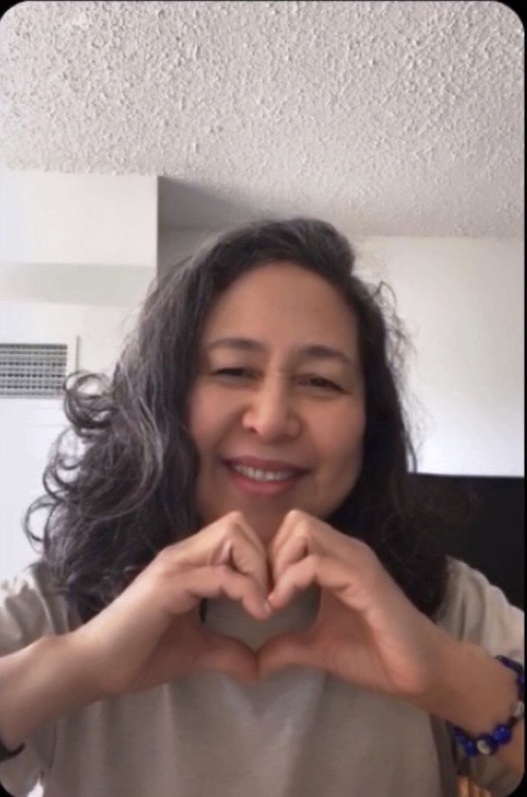

About Me
My name is Cora, and I am a Certified Nutritional Practitioner. I specialize in brain-gut health; the interconnectedness of the gut, the brain and the heart. Everything is connected! My mission is to support the person "wholistically", bring awareness and mindfulness by listening to what the body is telling us (symptoms).
My “feeling unwell” in 2018 led me to search for something to heal myself holistically to achieve optimal health through food, nurturing my body through nature and other holistic approaches (walking, yoga, exercise, me-time to name a few). I also learned how to look at stress differently, in a more positive way. Of course, this is an ongoing basis, taking one day at a time.
My biggest take away as a student at The Institute of Holistic Nutrition is to support the body; give it what it needs and it will do the rest. Our body is unique and very capable of healing itself!
Services
Below are my services packaged together at a premium price point.
All consultations take place at my office in Toronto.
Nutribody Analysis
LiveCell Microscopy
Diet/Lifestyle Recommendations
Supplement Recommendations
Lab and Diagnostic Interpretation
Initial Consultation Fee (includes all services listed above):
$150
Follow Up Fee: